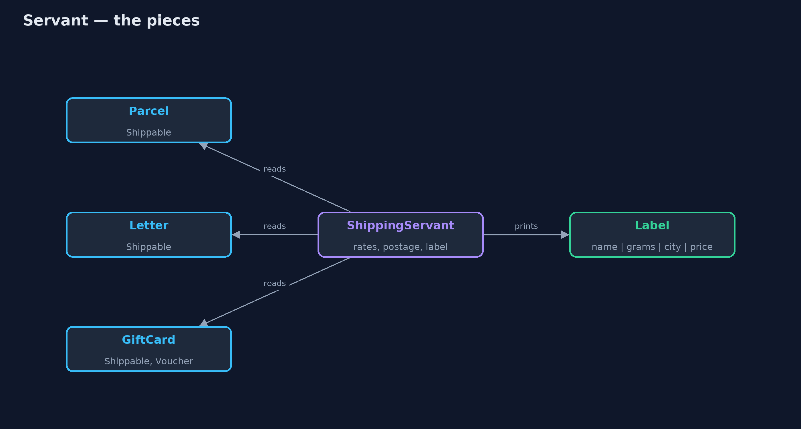
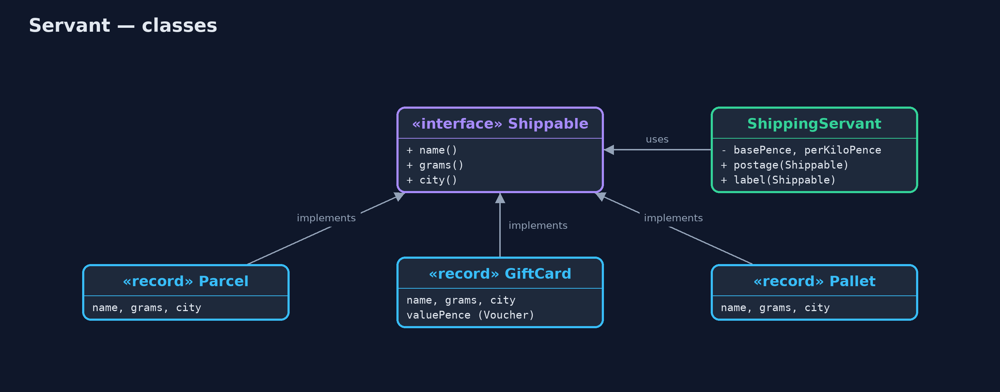
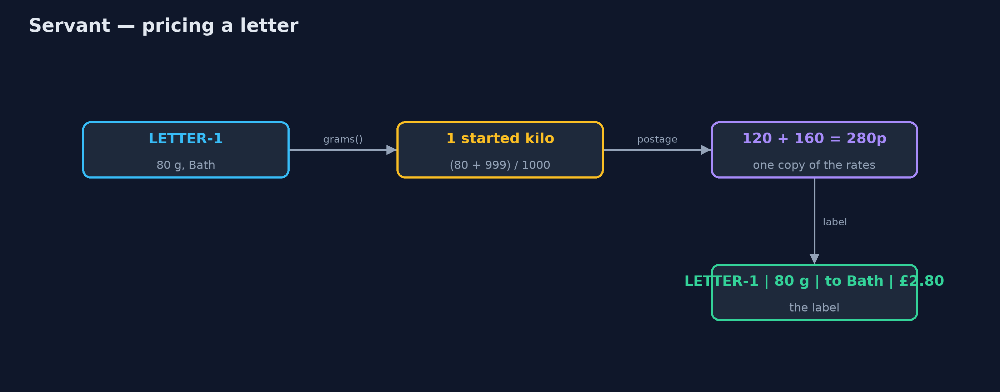
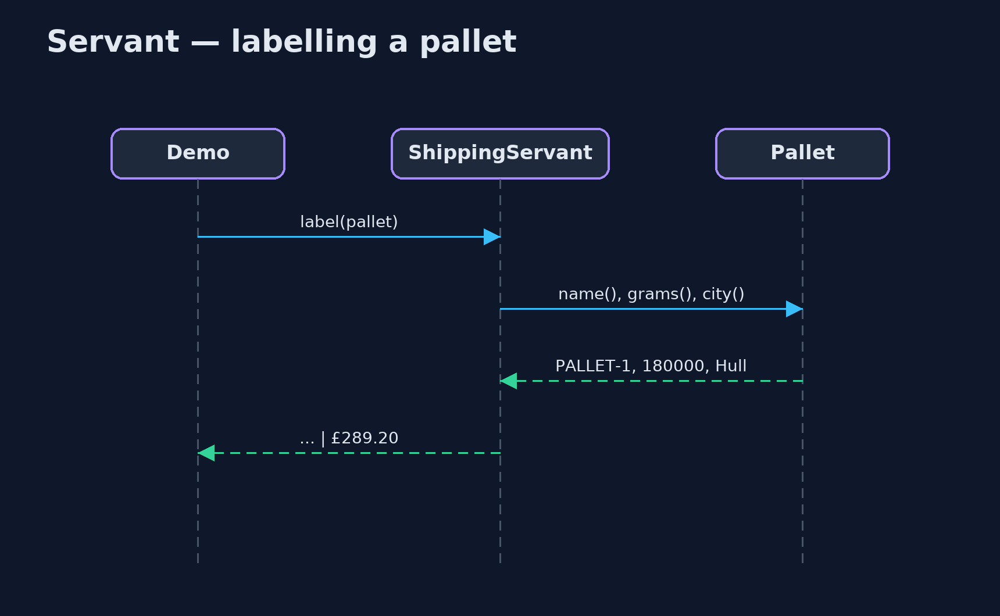

Servant Pattern
src/main/java/com/jk/explore/servant/
├── CopiedPostage.java Without the pattern: each kind of item carried its own copy of the postage sum
├── Items.java The things the shop sends
├── ServantDemo.java The five acts: copied postage code, one servant, a new kind of item, testing the servant alone, and the bill
├── Shippable.java What the servant needs from anything it ships: a name, a weight and a destination
└── ShippingServant.java The pattern: one class that serves every Shippable item, so the items themselves hold no shipping codePut behaviour that many unrelated classes need into one separate helper, the servant, which works on anything that offers a small interface.
Servant is a behavioural pattern for sharing behaviour between classes that have nothing else in common. Instead of copying the same method into each class, or forcing them all under one parent class, you write the behaviour once, in a separate class called the servant. Each class only promises a small interface, the few facts the servant needs, and the servant does the work.
The classes stay small and free to belong to whatever family they like, and the behaviour lives in exactly one place.
The idea in everyday terms
Think of a car wash. Every car in town gets washed, but no car carries its own brushes and soap. The car wash does not care about the make or the model. It only needs a car that fits through the door. When the car wash changes its prices, it changes them once, for every car.
The scenario
The online store posts parcels, letters and gift cards. Each kind of item had its own copy of the postage sum. When the carrier raised its prices, someone updated the parcel's copy and missed the other two, so letters and gift cards were undercharged.
Run
./gradlew runThe demo tells the story in 5 acts, each printing exact numbers that the tests check:
| Act | What it shows |
|---|---|
| 1. Copied postage | The carrier's new rates reached the parcel's copy (£6.00) but not the letter's or gift card's (£2.50, should be £2.80). |
| 2. One servant | ShippingServant labels the parcel £6.00 and the letter and gift card £2.80 each, from one copy of the rates. |
| 3. A new kind of item | A 180 kg pallet to Hull is labelled £289.20 with no new shipping code; it only says its name, weight and city. |
| 4. Tested alone | A made-up 1001 g item costs £4.40, two started kilos; the servant keeps no state between items. |
| 5. The bill | There is no parcel.postage(), so the servant must be known; every item must expose its weight and city. |
Test
./gradlew test8 tests in DemoRunsTest, ShippingServantTest. Every number the demo prints is asserted, and nothing depends on the clock, so every run gives the same result.
Technologies and versions
| Technology | Version | Used for |
|---|---|---|
| Java | 21 | the code (toolchain set in build.gradle) |
| Gradle | 9.2.1 (wrapper) | build and run, nothing to install |
| JUnit | 5.10.2 | the tests |
| videokit | repository tool | the narrated video and animation: Piper en_US-amy-medium, speed 0.8, longer pauses (the approved amy-slow voice) |
Learning Material
| Document | What it is for |
|---|---|
| Problem statement | the situation and what the project must show |
| Prerequisites | what you need to know first |
| Servant, explained | the acts in prose |
| Session guide | a one-hour lesson with exercises |
| Animated walkthrough | the acts step by step, narrated |
| Spec | what this project must be true of |
The pattern in one picture
Many unrelated items, one interface, one servant.

Where each piece sits
The servant depends on the interface, never on the item classes.

How the data moves
Three facts in, one label out.

Who calls whom, in order
The servant asks only what Shippable promises.

Video
video/servant-pattern-explained.mp4 (with .m4a audio and .srt subtitles) is built by video/build_video.sh. Rendered media is not committed.
What it costs
- The behaviour is not on the object. There is no
parcel.postage(); you have to know the servant exists to find it. - Items show more of themselves. Each item must expose its weight and city to anyone, so the servant can read them.
- Easy to overdo. Pulling every method out into servants leaves classes that only hold data and do nothing.
When this is too much
When the classes already share a natural parent, a method on that parent is simpler. And when only one class needs the behaviour, it belongs in that class. A servant is worth it when several unrelated classes need the same job done.
Where you have already met this
java.util.Collections.sort(list): one class that sorts anyListofComparablethings.Files,Objectsand other Java utility classes that work on anything with the right interface.- Printing and export helpers that turn any object with a few getters into a label or a CSV row.
- Service classes in Spring applications that operate on plain data objects.
Where this sits
This project is in behavioural, next to Visitor, which also keeps an operation outside the classes it works on, but lets the operation differ for each class. A servant does the same job for all of them.